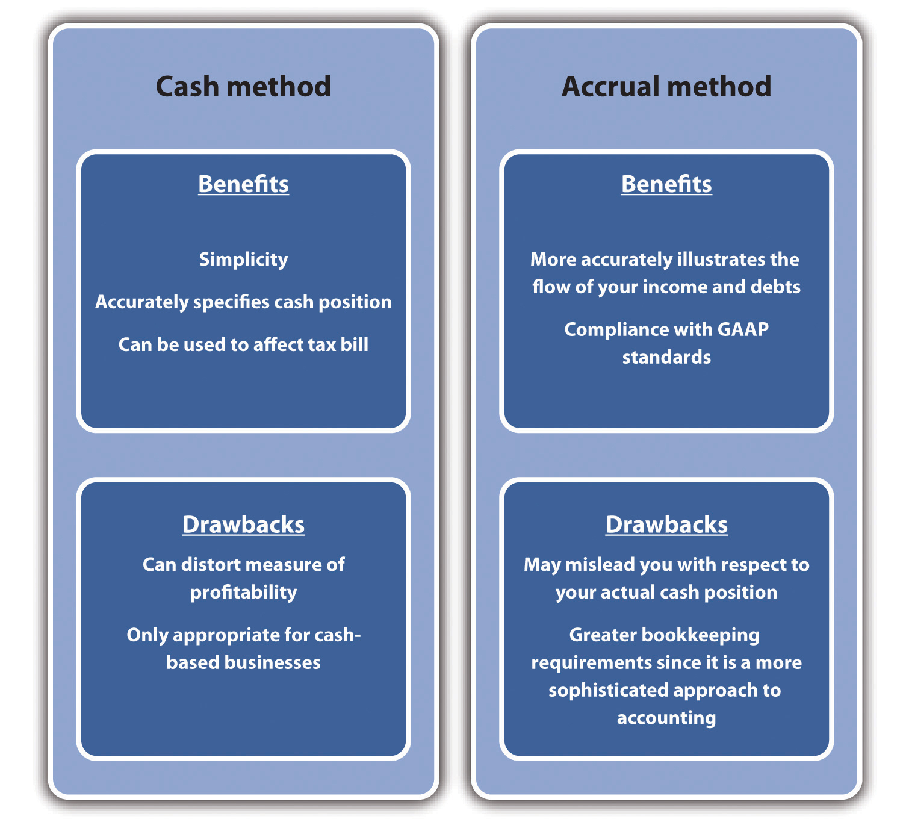

The older I get, the more interesting I find lawyers and accountants.Independent (London), April 21, 2010, quoted in “Accounting Quotes,” Qfinance, accessed February 14, 2012, www.qfinance.com/finance-and-business-quotes/accounting.
Alex James
Imagine that you invite a friend from China, who is visiting the United States for the first time, to a baseball game. Your friend has never been to a baseball game before and knows nothing of the game’s rules. He might notice on the scoreboard listings for runs, hits, and errors. Your friend might also see notations on the number of strikes and balls. He does not know exactly what any of those terms mean, but he notices that some people in the stands applaud when the number of runs increases. Your friend might be amused by seeing individuals periodically running from one base to another; however, without knowing the basic rules of baseball, he cannot possibly understand what is actually occurring. He certainly could not comment on how well the game is going or provide suggestions about what one of the teams should do next. Most Americans would be in the same position if they were watching a cricket match. In both cases, you and your friend are in the same position of someone who wishes to run a business without having a fundamental understanding of accounting systems.
Warren Buffett has said that accounting is, to put it simply, the language of business. Without a fundamental understanding of this language of accounting and its set of rules, you are in the same position as your Chinese friend—you really do not know what is going on with a business. If someone is considering starting a business, he or she should possess some degree of fluency in this language. One does not expect this businessperson to be as knowledgeable as a certified public accountant (CPA) or an expert in tax issues. However, such businesspeople should have a clear expectation that they will be able to look at the key elements of an accounting system and interpret how well their businesses are doing. They should be able to track some of the key tasks and elements associated with a comprehensive accounting system. As we will see in Section 9.4 "The Three Threads", computerized accounting programs for small businesses have greatly simplified this responsibility.
AccountingThe art of recording, classifying, and summarizing in a significant manner and in terms of money, transactions and events which are, in part at least, of a financial character, and interpreting the results thereof. is defined by the American Institute of Certified Public Accountants (AICPA) as “the art of recording, classifying, and summarizing in a significant manner and in terms of money, transactions and events which are, in part at least, of a financial character, and interpreting the results thereof.”Ramnik Singh Wahla, Accounting Terminology Bulletin No. 1: Review and Résumé, 1953, accessed February 14, 2012, c0403731.cdn.cloudfiles.rackspacecloud.com/collection/papers/1950/1953_0101_AccountingReview.pdf. Put more simply, it is essentially an information system. Accounting provides critical information to potential investors and businesses managers. Accounting may, in fact, be one of the oldest information systems known to humans. Some have argued that accounting systems were the impetus for the development of writing systems in Mesopotamia.Denise Schmandt-Besseart, “An Ancient Token System: The Precursor to Numerals and Writing,” Archaeology 39 (1986): 32–39; Richard Mattessich, “Prehistoric Accounting and the Problem of Representation: On Recent Archeological Evidence of Middle East from 8000 B.C. to 3000 B.C.,” Accounting Historians Journal 14, no. 2 (1987): 71–91. Archaeologists have discovered clay tokens, dating back 10,000 years ago, which functioned as part of the inventory system measuring agricultural goods, such as grains and domesticated animals. By 3500 BC, these tokens were being stored in containers—known as bullae. Notations on the surface of these containers indicated the type and quantity of the tokens held within; for many, this system was the basis of an abstract system of written communication.Salvador Carmona and Mahmoud Ezzamel, “Accounting and Forms of Accountability in Major Civilizations: Mesopotamia and Ancient Egypt” (working paper, Instituto de Empresa Business School, Madrid, Spain, and Cardiff University, Cardiff, UK, 2005), accessed December 2, 2011, latienda.ie.edu/working_papers_economia/WP05-21.pdf.
Other ancient societies recognized the importance of carefully monitoring and recording economic transactions. The Roman Empire needed to finance its operations and employed the familiar concept of an annual budget to coordinate expenditures and taxation. It had treasury managers, known as questors, who were subject to periodic audits.John R. Alexander, History of Accounting (Princeville, HI: Association of Chartered Accountants in the United States, 2002), 4. The most famous monograph on accounting dates to Renaissance Italy. Luca Pacioli, a Franciscan friar and polymath, wrote Summa de Arithmetica, Geometria, Proportioni et Proportionalita in 1494. Essentially this was a math textbook, but it included a section on double-entry bookkeeping. This approach to accounting had been covered by Beredetto Cotrugli a century earlier.John R. Alexander, History of Accounting (Princeville, HI: Association of Chartered Accountants in the United States, 2002), 9. The text was immediately recognized as an important contribution and was one of the first books produced by Gutenberg. On a first reading, Pacioli’s coverage appears to be remarkably “modern.” It described how merchants should identify their assets and liabilities, note transitions as they occur, and identify them as either debits or credits. He pointed out that the total of debits and credits must be equal, thus his model became the basis of the balance sheet. In the intervening five hundred years, business has essentially adapted Pacioli’s approach. Obvious, over the last five centuries, businesses have grown both in size and in complexity, and accounting systems have grown with them. Therefore, it is important for any business regardless of size to be able to “count” on solid accounting information.
The exact nature of accounting support will be greatly determined by the type and size of the small business. The level of accounting support required by the nonemployer business will obviously differ significantly from the level required by a business generating tens of millions of dollars of revenue and employing hundreds of workers. The level of support will also be influenced by the business owner’s familiarity with accounting and the type of accounting information systems that have been determined as appropriate. Regardless of size or type, small businesses should plan on eventually acquiring the talents of an accountant. Preferably, the decision to use an accountant should occur with the creation of the business.
Hiring an accountant or an accounting firm is an important decision for a small business. Employing an accountant does not translate into this individual being a full-time employee of the business. At the start, most small businesses will use the accountant as a consultant or a contract employee. As they grow, some small businesses might benefit from acquiring the services of full-service accounting firm. Although some start-ups, particularly those that might be cash-strapped, use the services of the bookkeeper only, but this is ill-advised. Most small businesses will need the services of a CPA. Another type of accountant a small business might employ is known as an enrolled agent. These are accountants who have passed a tax test from the Internal Revenue Service (IRS).
When looking for an accountant, there are some issues that you should consider. Try to find an accountant who has some working familiarity with a particular type of business or industry. Hopefully, you will be able to find an accountant with whom you have some rapport. This is important because a good accountant is more than simply someone who balances the books. You should consult an accountant before determining what type of accounting system you intend to employ—cash versus accrual (see Section 9.1 "Understanding the Need for Accounting Systems"). Remember that an accountant will play an important role in assisting you in the creation, purchase, and development of an accounting information system for the business. This system is important in providing the appropriate information to the external community (for this audience the term financial accountingAn accounting system that provides the appropriate information to the external community—bankers, angel investors, venture capitalists, and/or the government. is often used)—bankers, angel investors, venture capitalists, and/or the government. The same accounting information system will also be an important component of internal controls (in this case the term managerial accountingAn accounting system that provides information to the management of a business and aids in internal controls—systems and policies that make a firm more efficient. is used)—the systems and policies by which you make a firm more efficient. In this role, an accountant can help develop appropriate policies with respect to cash control and inventory control. An accountant can play a critical role in developing business plans, particularly with respect to budgets and financial statements. As highlighted in Section 9.3 "Financial Ratio Analysis", you should consult an accountant before selecting an accounting software package. Quite often, an accountant can be extremely useful in training people to use such a software package.Jean Murray, “Finding Help with Bookkeeping and Accounting Tasks,” About.com, accessed December 2, 2011, biztaxlaw.about.com/od/businessaccountingrecords/a/findacpa.htm.
Why Warren Buffett Said Accounting Is the Language of Business
(click to see video)This video introduces the importance of accounting.
Why You Need an Accountant
(click to see video)This video explains why a small business needs the services of a professional accountant.
What CPAs Wish Every Small Business Knew
(click to see video)This video approaches small business’s need for accounting from the accountant’s perspective.
The system of double-entry bookkeeping is, perhaps, the most beautiful one in the wide domain of literature or science. If it were less known, it would be the admiration of the learned world.“Edwin T. Freedley,” Cyber Nation, accessed February 14, 2012, www.cybernation.com/victory/quotations/authors/quotes_freedley_edwint.html.
Edwin T. Freedley
The evolution of accounting has led to two major systems: the cash basis model and the accrual basis model. Before describing the two systems, we must identify a very important term—accounting transactions. When in business, we either receive money from a sale or spend money, such as in buying a piece of equipment. We can define these as transactions. The manner in which we record transactions defines the difference between a cash basis accounting system or an accrual accounting system.
In most cases, either system can be used by a business (there are situations under which a cash-based accounting system cannot be used, the details of which are discussed later), but regardless of the system used, a business must clearly specify which method is being employed.
In the cash-based accountingAn accounting system where transactions are recorded when money is either received or spent. system, a transaction is recorded when money is either received or spent. As an example, a business has three sales on June 29 of a particular year. The first sale is for $500, the second is for $1,000, and the third is for $300. However, the three customers use different methods of payment. The first customer pays for the product in cash, the second customer writes a personal check, and the third customer pays by credit card. The second customer’s personal check clears on July 5, while the credit card company transfers the $300 into the business’s account on July 3. Under the cash basis accounting system, the business would list the first sale of $500 as a June transaction, but it would list the second and third sales (totaling $1,300) as July transactions. The same logic is used with respect to expenditures. If the same firm purchased a laptop computer in July but did not have to pay for two months, then the transaction would be recorded in September.
Under the accrual accountingAn accounting system where transactions are recorded when they occur. system, transactions are recorded when they occur. If the aforementioned business was functioning under the accrual basis accounting system, then all three sales (totaling $1,800) would be recorded as June transactions, and the purchase of the laptop would be designated as a July transaction.
Generally, though, with some few exceptions, businesses must use the accrual basis accounting method if they have inventory of any component of items that they sell to the public and if the sales are more than $5 million per year. Other conditions under which the cash basis accounting system may not be used include C corporations, partnerships with at least one C corporation partner, and tax shelters.“Comparison of Cash and Accrual Methods of Accounting,” Wikipedia, accessed December 2, 2011, en.wikipedia.org/wiki/comparison_of_cash_method _and_accrual method of accounting. The major benefit of cash basis accounting is its simplicity. It greatly reduces the demand on bookkeeping. The cash basis system also provides a much more accurate indication of a company’s current cash position. This approach may be used to affect taxable income, which can be done by deferring billing so that payments are received in the next year.Melissa Bushman, “Cash Basis versus Accrual Accounting,” Yahoo! Voices, accessed December 2, 2011, voices.yahoo.com/cash-basis-versus-accrual-basis -accounting-147864.html?cat=3. However, there are drawbacks to the cash basis approach—the most serious being that it may provide a distorted or an inaccurate indication of profitability. The reality is that cash basis accounting systems are really only appropriate for businesses with sales under $1 million and that function basically on a cash basis.
Accrual basis accounting is in conformance with IRS and generally accepted accounting principles (GAAP) regulations. Although more complex and generally requiring greater bookkeeping with a more sophisticated approach to accounting, the accrual basis provides a more accurate indication of the profitability of a business. The major drawback of the accrual basis system comes with respect to understanding the business’s cash position. A firm may look profitable under this system, but if customers have not paid for the goods and services, the cash position might be dire.“Cash vs. Accrual Accounting,” Nolo.com, accessed December 2, 2011, www.nolo.com/legal-encyclopedia/cash-vs-accrual-accounting-29513.html. A summary of the pros and cons of the two systems is provided in Figure 9.1 "Comparative Accounting Systems".
Figure 9.1 Comparative Accounting Systems
Accrual versus Cash-Basis Accounting Video Presentation
(click to see video)A lecture on the two accounting systems.
Accrual Basis versus Cash Basis Accounting Power
(click to see video)A video with voice-over of a PowerPoint presentation.